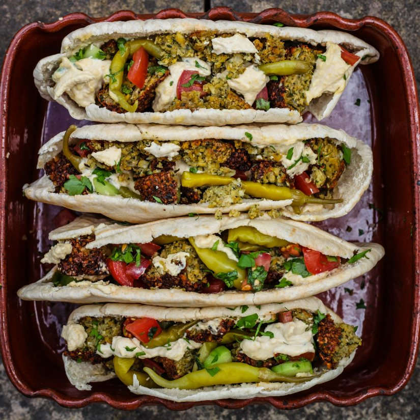
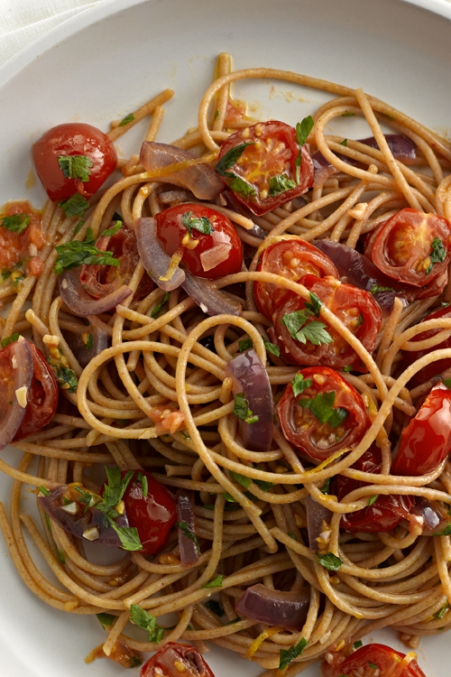

Homemade Falafel Pittas

Preparation notes
Serves 4
Cooking Time (includes preparation time) is 2 hours
Ingredients
Ingredients For the falafel:
500g dried chickpeas
1 onion, roughly chopped
3 cloves of garlic, finely chopped
1 bunch fresh parsley, roughly chopped
1 bunch fresh coriander, roughly chopped
2 tbsp plain flour
2 heaped tsp cumin
1 heaped tsp cayenne pepper
Salt
Pepper
Sunflower oil (if you’re frying the falafel)
For the salad:
4 tomatoes, finely chopped
1 cucumber, peeled and roughly chopped
Bunch of mint
1 lemon, juice only
Parsley – (Use leftover from falafel)
For the assembly:
4 pittas
Hummus
Pickled green chillies
Method
1. Pour dried chickpeas into a bowl, cover with warm water and soak overnight.
2. Preheat oven to 180°C/gas mark 4. Start with the falafel mix. Into a blender, add the dried chickpeas (soaked overnight), onion, garlic, coriander, a large handful of parsley (reserve a handful for the salad), flour, cumin and cayenne pepper. Season with salt and pepper.
3. Pulse the mixture in the blender. You want the texture of the mix to be rough so don’t overdo it. 3-5 second pulses should do the trick.
4. Check the falafel mixture can stick in a ball. If it is too loose, just add a bit more flour.
5. Once you are able to stick the mixture together, make little discs, around 4cm wide and 3cm deep. Line up the discs on a sheet of baking paper, and put them in the fridge for 10 minutes to firm up. The mixture should make about 20 discs.
6. Salad time. Put the tomatoes into a bowl, then add the cucumber. Add a handful of chopped mint, a handful of chopped parsley, the juice of a lemon, salt, pepper, olive oil. Mix everything together and set aside.
7. Falafel time. We have designed two options for you. The first is baked falafel – less crunch than the fried version, but much healthier. For this option, line a baking tray with baking paper, and place your falafel on the paper. Drizzle lightly with olive oil on one side, and then turn over the falafel and drizzle olive oil on the other side. Pat in the oil with your fingers, and then place in the oven for 30 minutes, flipping the falafel after 20 minutes.
8. The fried option is a bit more unhealthy, but much crunchier. For this, take a wide frying pan and pour in some sunflower oil. You should pour in enough that it comes up by 1.5cm in the pan. Heat up the oil. To check it is hot enough, just put in a tiny bit of leftover falafel mixture. When it starts bubbling, you are good to go. Place your falafels in the pan, and cook for 5-6 minutes on each side, or until each side is brown and crisp. When ready, remove falafels from the pan and place on some kitchen paper. Put some kitchen paper on top of them, and pat off the oil.
9. Assembly time. Warm your pittas. Layer one side with a generous helping of hummus. Spoon in some of the salad. Then, take your baked or fried falafels and break them into the pittas – squeeze in 4 or 5 discs into each one. Put some pickled green chillies on top, then spoon over a bit more hummus. Enjoy!
Spaghetti with Cherry Tomatoes

Preparation notes
Serves 2
Preparation: 10 mins
Cooking: 15 mins
Ingredients
150g wholewheat spaghetti
2 tbsp olive oil
1 small red onion, finely diced
3 cloves garlic, crushed
16 cherry tomatoes, halved
½ medium lemon, zest only
Pinch of salt
Pinch of ground black pepper
5g fresh parsley or coriander, finely chopped
Method
1. Place spaghetti in large pan of boiling water and cook for 10 to 12 minutes, or according to packet instructions, until tender.
2. While the spaghetti is cooking, heat the oil in a deep-sided frying pan over a medium heat. Add the onion and garlic, cooking for 3 minutes until softened.
3. Add the tomatoes and lemon zest, then season with salt and pepper.
4. Cook for about 5 minutes or until the tomatoes become really soft and the oil has begun to take on an orange colour.
5. Once cooked, remove from the heat.
6. When the spaghetti is cooked, drain and add it to the tomatoes, along with the chopped herbs. Stir to combine, then serve.
Kidney Bean Burgers

Preparation notes
Preparation Time: 10 mins
Cooking Time: 15 mins
Makes 6 burgers
Ingredients
1 tin (400g) kidney beans
2 tomatoes, finely chopped
1 garlic clove, crushed
2 heaped tsp mixed herbs
115g breadcrumbs
50g semolina
1 tbsp soy sauce
1 tbsp lemon juice
1 tbsp of vegetable oil
Serve on lightly toasted buns with a salad and relish
Method
1. Drain, rinse then mash the kidney beans.
2. Mix together the beans, tomatoes, garlic and herbs in a large bowl.
3. Add the breadcrumbs and semolina. Mix well.
4. Add soy sauce and lemon juice. If necessary add a tablespoon of water to increase moisture (but don’t be tempted to add any more!)
5. Shape into burgers.
6. Gently fry the burgers in the vegetable oil until golden brown, approximately about 10-15 minutes.
Vegan Pizza
Preparation notes
The dough
Preparation time: 15 mins
Rising time: 1 hr
The tomato sauce
Preparation time: 5 mins
Cooking time: 10 mins
Putting it all together
Preparation time: 10 mins
Rising time: 10 mins
Ingredients
The dough
450g strong plain flour
1 tsp salt
2 sachets of fast-acting yeast
2 tbsp olive oil, plus a bit extra for
oiling the baking sheet
300ml warm water
The tomato sauce
1/2 tbsp of vegetable or olive oil
1 small onion, finely chopped
400g tin of chopped tomatoes
1 tsp of balsamic vinegar
A good pinch of mixed herbs
Topping suggestions:
Peppers (red, green or yellow), diced
Mushrooms, sliced
Tinned corn, drained
Spinach and/or basil, coarsely chopped
Tomatoes, sliced
Black olives, sliced
Vegetarian Feta cheese, crumbled
Vegetarian or vegan sausage, cooked and sliced
225g vegetarian or vegan cheese (preferably mozzarella for pizza), grated
One 225g packet of cheese is enough for two 30cm pizzas.
Method
The dough
1. Sift the flour and salt into one of the large mixing bowls, and make a hole in the centre.
2. Pour the yeast, oil and warm water into the centre of the hole.
3. Gradually mix in the flour to make a soft dough.
4. Turn out the dough on to a lightly floured surface and knead well until it is smooth, pliable and elastic. This will only take a few minutes. (Remember to remove any rings before kneading the dough).
5. Place the ball of dough into the other large bowl, cover with a cloth and leave in a warm place for 1 hour, until well-risen and doubled in size. (This is a good time to make your tomato base and prepare any toppings).
The tomato sauce
1. Heat the oil in the frying pan over medium heat, and gently fry the onion for 5 minutes.
2. Add the chopped tinned tomatoes, vinegar, and herbs and cook for 5 minutes, stirring occasionally.
3. Purée the sauce in a blender or with a hand blender.
4. Set to one side.
Putting it all together
Stage one
1. After the dough has had an hour to rise, turn the oven on to 220°C/425°F/Gas Mark 7.
2. Turn out the dough on to a lightly floured surface, punch it down and divide into four pieces.
Stage two
1. Knead each piece lightly and roll out until it is about 30cm in diameter.
2. Oil the metal baking sheet and place one of the rounds of dough on it.
3. Top the dough with the tomato sauce and any other toppings of your choice.
Stage three
1. Bake in the preheated oven until the base of the pizza is crisp and golden brown, around 10 minutes.
2. Remove to a large chopping board and cut into slices using a pizza cutter or sharp knife.
3. Repeat with the other rounds of dough.